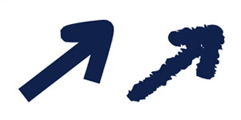
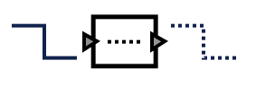
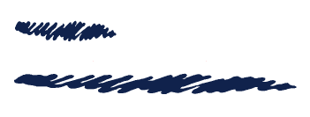

This document describes two approaches to building a brush stroke rendering component for informal user interfaces. The goal of brush strokes is to make vector graphics look hand-drawn, the idea being that this will make certain types of vector graphics-based user interfaces more natural to use. The diva.sketch.BrushStroke class is the implementation of this idea for Java2D.
|  |
|
Arrow: normal vs. brush-stroked |
In both approaches described in this document, BrushStroke implements the java.awt.Stroke interface. Stroke is the way in which Java2D allows users to augment low-level vector rendering capabilities. A Stroke is an interface which produces a "stroked" equivalent when given a wireframe object as input. For example, BasicStroke, the default Java2D stroke implementation, allows the user to control things like the line width, dashes, rounded vs. square vs. angled miters, etc.
|  |
|
BasicStroke |
The BrushStroke implementation allows the user to choose from "brushes" which allow for configuration of the stroke’s look and feel. For example, one brush might create a stroke reminiscent of a felt-tip marker and one might create a stroke resembling a stick of charcoal.
|
BrushStroke |
The shape-warping approach is the one pictured above, where a brush’s shape is warped so that it surrounds the perimeter of the input shape. This is accomplished by constructing a parametric mapping between the two shapes, ranging from 0 to 1. This is illustrated intuitively in the figure below.
[figure: shape-warping approach]
The shape-warping implementation is given in the following pseudocode:
[pseudocode]
The shape-warping approach has a single but significant benefit, which is its simplicity. It is quite simple for a user to create his own brush interactively, by editing a shape. Furthermore, the simple behavior of the stroking algorithm is intuitive and predictable. The approach has two drawbacks, however. The first drawback is that the stroke’s algorithmic consistency results in visual inconsistency, when applied to shapes of different path lengths, because of the parametric mapping. This is best illustrated with a figure:
|  |
|
Inconsistency: top and bottom strokes use same brush but are rendered differently because they are different lengths. |
The second drawback is that the algorithm is slow. Not intrinsically so, but slow under the constraints implied by the java.awt.Shape interface. If the Shape interface had some sort of parametric measurement built into it, the explicit first-pass calculation of the shape’s parameter values might be avoided, and the algorithm might be sped up considerably. Since this is an inner-loop piece of rendering code, performance is of utmost importance.
The caps-and-repeater approach attempts to solve both problems that plague the shape-warping approach, and does so at the cost of increased complexity. The basic idea is that rather than specify a single shape that is stretched around the given shape, define a pair of head and tail "caps" which are pasted around a body shape which is repeated. This is illustrated below:
[figure: caps-and-repeater]
This solves the distortion problem of shape-warping because the caps and repeater can be warped in logical coordinates instead of parametric space. The algorithm can also be made single-pass for the same reason. The pseudocode (and illustrative pictures) are shown below:
[pseudocode and images]
The downside of this algorithm is that it suffers from relative complexity. The specification of a body and end-caps is not as straightforward as the specification of a single shape to be warped. Also the general approach does not imply all aspects of the implementation and there is still some policy that needs to be set for these cases. For example:
In the implementation code complexity arises from various lookahead problems. For example, consider the drawing of the end cap: the algorithm needs to start drawing the end cap before it actually finishes iterating over the given shape, so it needs to maintain a buffer and look-ahead for this purpose.
[more here]